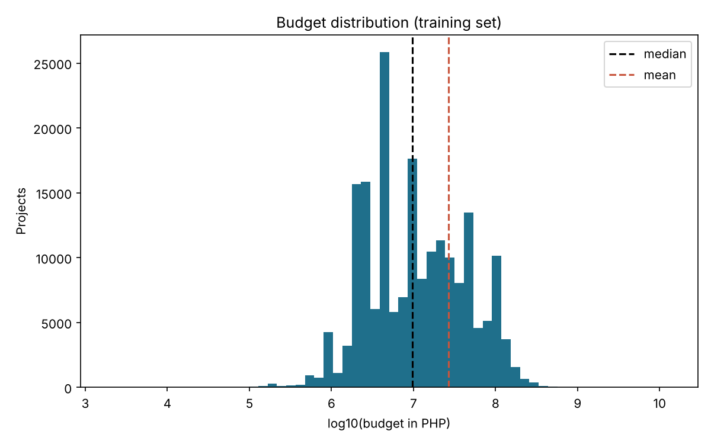
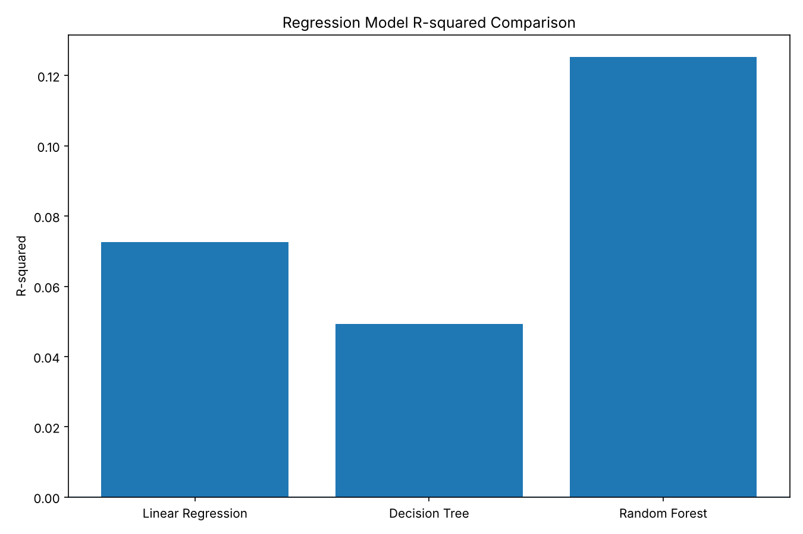
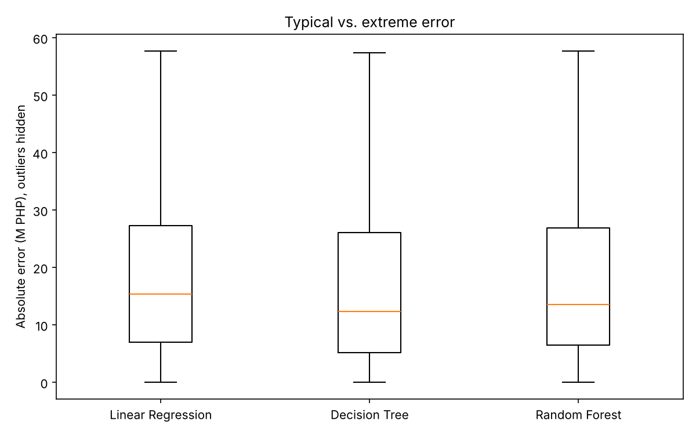
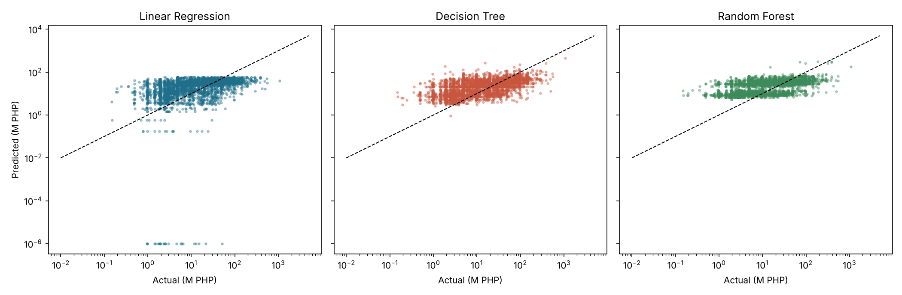
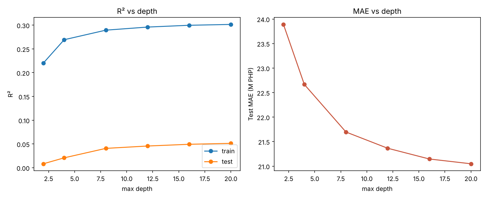
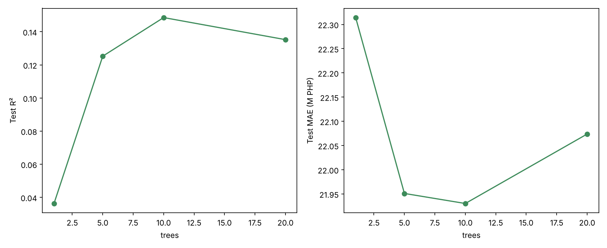

CMSC 170: Introduction to Artificial Intelligence · UPLB
Predicting DPWH Project Budgets
Three regression models built from scratch, compared on 48,231 test projects. The best model depends on the metric.
Data
DPWH Transparency Data from BetterGov.ph
Preparation
Features: category, year, region. Top 5 categories kept, the rest grouped as "Other". One-hot encoding, year min-max scaled. Everything fitted on training data only.

Methods
All implemented with Python and NumPy only
Linear Regression
Gradient descent on squared error.
Decision Tree
Splits by variance reduction.
Random Forest
Averages randomized trees.
Results
Test set, best per metric highlighted
| Model | MAE (₱) | RMSE (₱) | MSE (₱²) | R² |
|---|---|---|---|---|
| Linear Regression | 22,711,847 | 56,596,485 | 3.203e15 | 0.0725 |
| Decision Tree | 21,145,853 | 57,299,852 | 3.283e15 | 0.0493 |
| Random Forest | 21,951,105 | 54,964,605 | 3.021e15 | 0.1252 |
| Median baseline | 22,067,801 | 61,015,337 | n/a | -0.0780 |
| Mean baseline | 26,705,899 | 58,768,938 | n/a | 0.0000 |


Why the metrics disagree
Each metric punishes mistakes differently
MAE
Every peso of error counts equally, so it reflects the typical project. Decision Tree wins.
RMSE and MSE
Squaring makes big misses dominate. Random Forest wins by averaging out extreme guesses.
R²
Share of variance explained versus predicting the mean. Random Forest explains 12.5%.
| Typical-case view | Median abs. error (₱) | Within ₱10M |
|---|---|---|
| Linear Regression | 15,414,029 | 35.7% |
| Decision Tree | 12,319,377 | 44.1% |
| Random Forest | 13,597,903 | 42.9% |

Extra analysis



Discussion
Random Forest
Best when large errors matter.
Decision Tree
Best for typical-project accuracy.
Linear Regression
Weakest on typical error; budgets are not linear in one-hot features.
Code
Run from the project root with the dataset in data/
python -m pip install numpy matplotlib python -m src.comparison # 3 models, tables, graphs python -m src.extra_analysis # baselines and extra graphs
| File | Purpose |
|---|---|
| src/preprocessing.py | Cleaning, encoding, split |
| src/models/ | Linear, tree and forest models |
| src/evaluation.py | MAE, MSE, RMSE, R² |
| src/comparison.py | Runs and compares all models |
| src/extra_analysis.py | Baselines and extra graphs |
Team
Sean Carlo Castillo
Repository, data preparation, Linear Regression, integration
Donna Cadayona
Decision Tree Regression
Justin Lawrence Cruz
Random Forest Regression